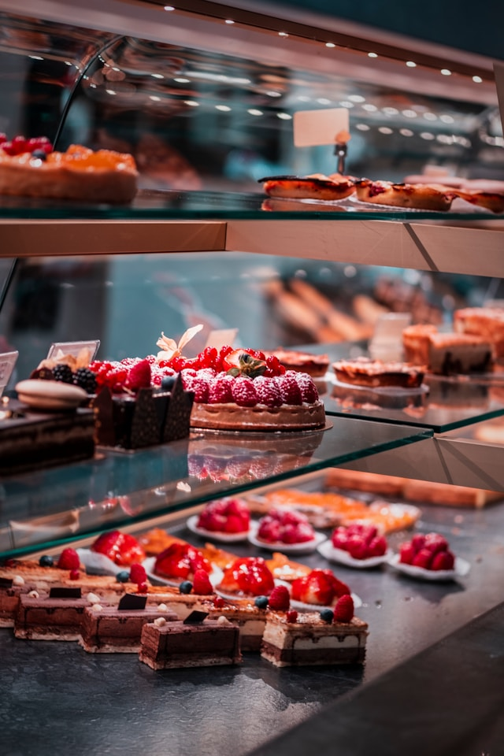
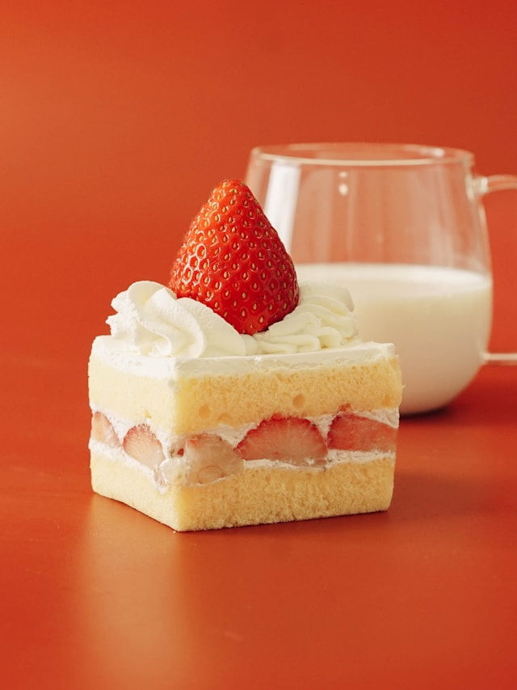
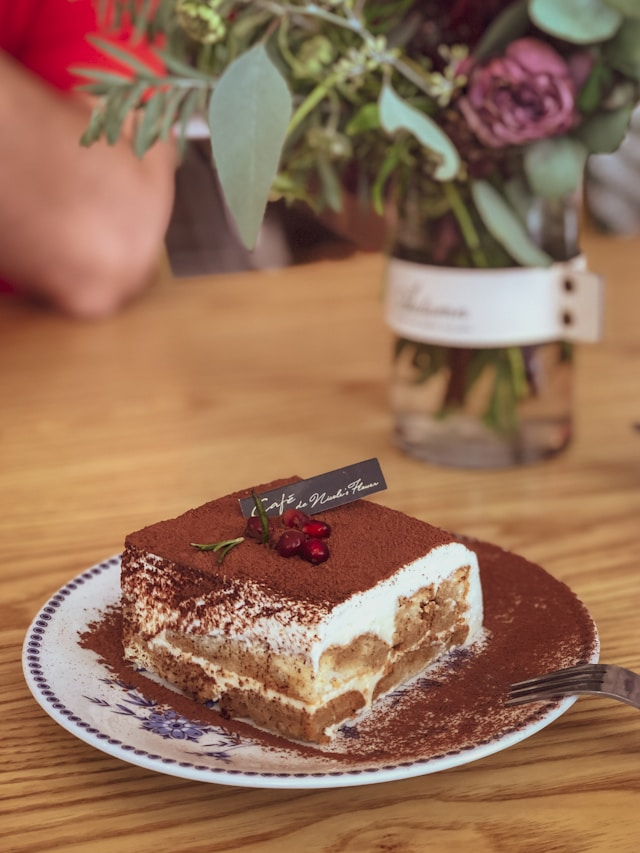
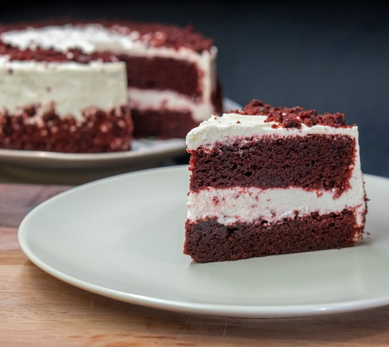
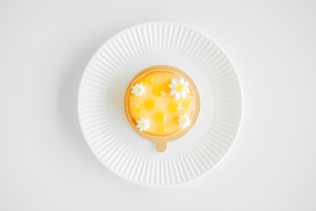
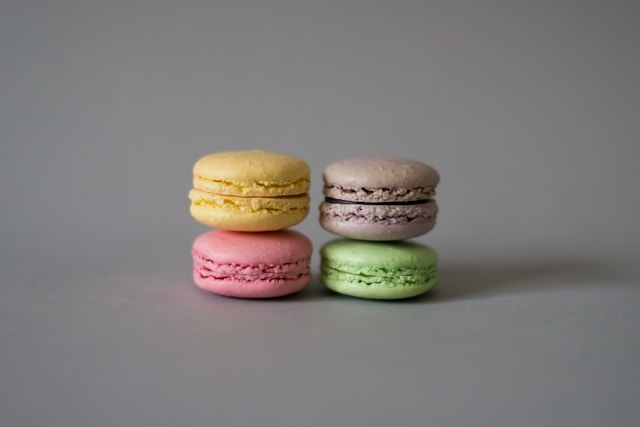

고급 원재료와 차별화된 레시피를 더한 프리미엄 케이크, 트렌디한 감각과 스타일로 새로운 즐거움을 주는 스몰 디저트까지 KATT COFFEE의 자부심이 담긴 다양한 디저트를 만나볼 수 있습니다.

시그니처 디저트

딸기 생크림 케이크 Strawberry Fresh Cream Cake
한가득 올린 상큼한 딸기, 풍성한 생크림의 캣커피 시그니처 케이크
KATT COFFEE's signature cake with fresh strawberries topping on whipped cream

마스카포네 티라미수 Mascarpone Tiramisu
마스카포네 치즈 크림과 에스프레소 커피 시럽이 촉촉하게 어우러진 이탈리안 무스 케이크
Italian mousse cake with mascarpone cheese cream and espresso coffee syrup

레드벨벳 Red Velvet
붉은 컬러 시트에 고소한 버터 크림치즈를 풍부하게 올려 불륨감이 돋보이는 캣커피 대표 구움 케이크
KATT COFFEE's representative baked cake topped with rich butter cream cheese on a red colored sheet

레몬타르트 Lemon Tart
바삭한 파이지에 상큼한 레몬필링을 가득채운 레몬타르트
Authentic Paris-style baked pie sheet with a refreshing lemon filling

마카롱 Macaron
생생한 컬러, 녹아내리듯 부서지는 크런치함, 풍부한 크림의 촉촉한 부드러움, 입안 가득 퍼지는 달콤한 마카롱
A macaron that allows you to enjoy a variety of vibrant colors, crunchiness, moist softness of rich cream, and sweetness that is spreaded in your mouth